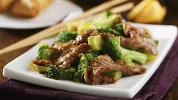

Boeuf aux légumes à la chinoise

Description
Magnifique assiette de boeufs avec des accents de vert et une touche asiatique
Ingrédients
- 1 1/2 Boeuf en tranche
- 3 c. a table HUlie
- 1 1/2 Brocoli
- 1 boite champignon
- 1 tasse de celeri
- 2 c a table sauce soya et Worcesershire
- 1 tasse boulion boeuf
- 2 c a table de fecule de mais
Steps
- Faire revenir boeuf et hulie
- Ajouter brocoli, champignons celeri et echallote
- Ajouter sauces et boulilon
- Ajouter fecule et eau
- Cuire a couvert 3 minutes
Back to Homepage